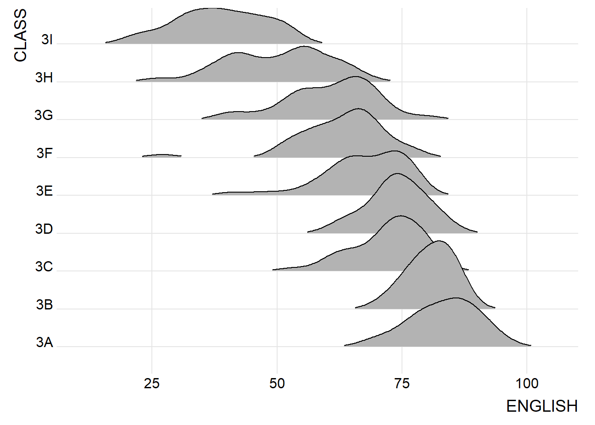

pacman::p_load(ggdist, ggridges, ggthemes,
colorspace, tidyverse)Hands-on Exercise 4d
Visualising Distribution
1 Learning Outcome
Visualising distribution is not new in statistical analysis. In chapter 1 we have shared with you some of the popular statistical graphics methods for visualising distribution are histogram, probability density curve (pdf), boxplot, notch plot and violin plot and how they can be created by using ggplot2. In this chapter, we are going to share with you two relatively new statistical graphic methods for visualising distribution, namely ridgeline plot and raincloud plot by using ggplot2 and its extensions.
2 Getting Started
2.1 Installing and loading the packages
For the purpose of this exercise, the following R packages will be used, they are:
ggridges: A ggplot2 extension specially designed for plotting ridgeline plots,
ggdist: A ggplot2 extension spacially desgin for visualising distribution and uncertainty,
tidyverse: A family of R packages to meet the modern data science and visual communication needs,
ggthemes: A ggplot extension that provides the user additional themes, scales, and geoms for the ggplots package
colorspace: An R package provides a broad toolbox for selecting individual colors or color palettes, manipulating these colors, and employing them in various kinds of visualisations.
The code chunk below will be used load these R packages into RStudio environment.
2.2 Data import
For the purpose of this exercise, Exam_data.csv will be used.
In the code chunk below, read_csv() of readr package is used to import Exam_data.csv into R and saved it into a tibble data.frame.
exam <- read_csv("data/Exam_data.csv")3 Visualising Distribution with Ridgeline Plot
Ridgeline plot (sometimes called Joyplot) is a data visualisation technique for revealing the distribution of a numeric value for several groups. Distribution can be represented using histograms or density plots, all aligned to the same horizontal scale and presented with a slight overlap.
The figure below is a ridgelines plot showing the distribution of English score by class.

:::call-out note Ridgeline plots make sense when the number of group to represent is medium to high, and thus a classic window separation would take to much space. Indeed, the fact that groups overlap each other allows to use space more efficiently. If you have less than 5 groups, dealing with other distribution plots is probably better. :::
It works well when there is a clear pattern in the result, like if there is an obvious ranking in groups. Otherwise group will tend to overlap each other, leading to a messy plot not providing any insight.
3.1 Plotting ridgeline graph: ggridges method
There are several ways to plot ridgeline plot with R. In this section, you will learn how to plot ridgeline plot by using ggridges package.
ggridges package provides two main geom to plot gridgeline plots, they are: geom_ridgeline() and geom_density_ridges(). The former takes height values directly to draw the ridgelines, and the latter first estimates data densities and then draws those using ridgelines.
The ridgeline plot below is plotted by using geom_density_ridges().


3.2 Varying fill colors along the x axis
Sometimes we would like to have the area under a ridgeline not filled with a single solid color but rather with colors that vary in some form along the x axis. This effect can be achieved by using either geom_ridgeline_gradient() or geom_density_ridges_gradient(). Both geoms work just like geom_ridgeline() and geom_density_ridges(), except that they allow for varying fill colors. However, they do not allow for alpha transparency in the fill. For technical reasons, we can have changing fill colors or transparency but not both.


3.3 Mapping the probabilities directly onto colour
Beside providing additional geom objects to support the need to plot ridgeline plot, ggridges package also provides a stat function called stat_density_ridges() that replaces stat_density() of ggplot2.
Figure below is plotted by mapping the probabilities calculated by using stat(ecdf) which represent the empirical cumulative density function for the distribution of English score.


::: call-out Important It is important include the argument calc_ecdf = TRUE in stat_density_ridges(). :::
3.4 Ridgeline plots with quantile lines
By using geom_density_ridges_gradient(), we can colour the ridgeline plot by quantile, via the calculated stat(quantile) aesthetic as shown in the figure below.


Instead of using number to define the quantiles, we can also specify quantiles by cut points such as 2.5% and 97.5% tails to colour the ridgeline plot as shown in the figure below.


4 Visualising Distribution with Raincloud Plot
Raincloud Plot is a data visualisation techniques that produces a half-density to a distribution plot. It gets the name because the density plot is in the shape of a “raincloud”. The raincloud (half-density) plot enhances the traditional box-plot by highlighting multiple modalities (an indicator that groups may exist). The boxplot does not show where densities are clustered, but the raincloud plot does!
In this section, you will learn how to create a raincloud plot to visualise the distribution of English score by race. It will be created by using functions provided by ggdist and ggplot2 packages.
4.1 Plotting a Half Eye graph
First, we will plot a Half-Eye graph by using stat_halfeye() of ggdist package.
This produces a Half Eye visualization, which is contains a half-density and a slab-interval.


:::call-out note We remove the slab interval by setting .width = 0 and point_colour = NA. :::
4.2 Adding the boxplot with geom_boxplot()
Next, we will add the second geometry layer using geom_boxplot() of ggplot2. This produces a narrow boxplot. We reduce the width and adjust the opacity.


ggplot(exam,
aes(x = RACE,
y = ENGLISH)) +
stat_halfeye(adjust = 0.5,
justification = -0.2,
.width = 0,
point_colour = NA) +
geom_boxplot(width = .20,
outlier.shape = NA)
4.3 Adding the Dot Plots with stat_dots()
Next, we will add the third geometry layer using stat_dots() of ggdist package. This produces a half-dotplot, which is similar to a histogram that indicates the number of samples (number of dots) in each bin. We select side = “left” to indicate we want it on the left-hand side.


4.4 Finishing touch
Lastly, coord_flip() of ggplot2 package will be used to flip the raincloud chart horizontally to give it the raincloud appearance. At the same time, theme_economist() of ggthemes package is used to give the raincloud chart a professional publishing standard look.


References
Introducing Ridgeline Plots (formerly Joyplots) Claus O. Wilke Fundamentals of Data Visualization especially Chapter 6, 7, 8, 9 and 10.
Allen M, Poggiali D, Whitaker K et al. “Raincloud plots: a multi-platform tool for robust data. visualization” [version 2; peer review: 2 approved]. Welcome Open Res 2021, pp. 4:63. Dots + interval stats and geoms